空间转录组全程教学
原文：https://mp.weixin.qq.com/s?__biz=MzAwMzIzOTk5OQ==&mid=2247534790&idx=2&sn=b01c07330e986ea325c65c138096533f&chksm=9b3c3196ac4bb8806c9a451bff6eb9e9a70094d718a694a60c1a314fe83d27e4274bb7efc897#rd 合集：生信基地
干货满满
空间转录组数据分析不会？用Python处理空间数据，要么看不懂代码，要么复现不了论文图表？在一次搞定Python空间转录组分析课程一一找到答疑。现全部课程已制作完成！耗时4个月打磨出69h的纯享版教程，涵盖为135个精心录制的高清视频（总计92.85GB优质资源），全程聚焦Python环境下的空间转录组分析场景量身定制。全程用真实空间转录组数据集手把手带练，不仅能灵活扩展工具包，还能无缝衔接机器学习与可视化环节，学完就能直接套用方法处理自己的科研数据。各教学模块如下：
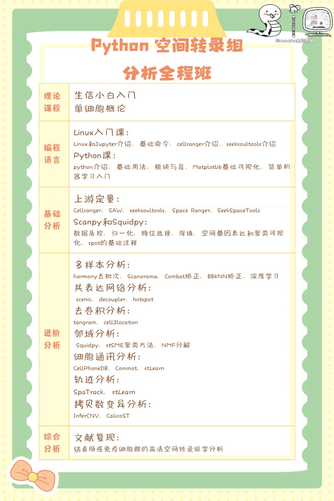
✅ 零基础友好 ：69小时「编程基础 + 分析工具 + 文献复现」循序渐进，直击空间转录组核心流程（上游定量→基础分析→多样本分析→共表达网络分析→去卷积分析→邻域分析→细胞通讯分析→轨迹分析→拷贝数变异分析→论文复现）！
✅ 硬核实操 ：精通Scanpy、Squidpy、Python版Seurat、CellPhoneDB、Commot、stLearn、stSME、NMF等核心工具，掌握「代码编写+报错排查+分析思路设计」全技能！
✅ 专业护航 ：五年以上的单细胞教学经验，教程总点击量超1000万；专属课程群实时答疑，不怕学不会！
✅ 重磅权益 ：报名享3年课程指导、答疑、回放、直播复听，附赠 256GB内存、500GB硬盘、20线程服务器3个月使用。
✅ 海量资源 ：配套Python空间转录组分析手册 + 代码 + 测试文件（~1171.52GB）！
课程回放+全套资料已就位，新学员上车、老学员查漏补缺~
详情见下文
感兴趣的朋友可以联系客服微信[Biomamba_zhushou]咨询报名详情。

本次课程学习资料
| 课程时长目录如下，欢迎联系我们免费试听!时长(时.分.秒) | 专题名称 |
|---|---|
| 04.57.42 | 01 生信小白入门/单细胞概论 |
| 11.05.29 | 02 Linux入门课 |
| 08.27.01 | 03 Python入门课 |
| 04.27.54 | 04 空间转录组概论 上游定量 |
| 05.06.40 | 05 空间转录组 基础分析 |
| 03.40.54 | 06 空间转录组 多样本分析 |
| 03.42.20 | 07 空间转录组 共表达网络分析 |
| 07.01.25 | 08 空间转录组 去卷积分析 |
| 03.07.36 | 09 空间转录组 邻域分析 |
| 04.15.24 | 10 空间转录组 细胞通讯分析 |
| 03.36.28 | 11 空间转录组 轨迹分析 |
| 03.11.02 | 12 空间转录组 拷贝数变异分析 |
| 06.20.30 | 13 空间转录组 文献复现 |
| 视频回放链接: https://pan.baidu.com/s/1PA-atxRUwcSQjueqMnHrNw |
提取码可联系客服微信[Biomamba_zhushou]获取~
所见即所得
通过这次全程学习，你将获得并掌握以下学习手册与资料：
Linux基础课学习手册


同我们以前的课程一样，我们给大家准备了学习手册和学习资料，大家可联系客服微信[Biomamba_zhushou]领取：
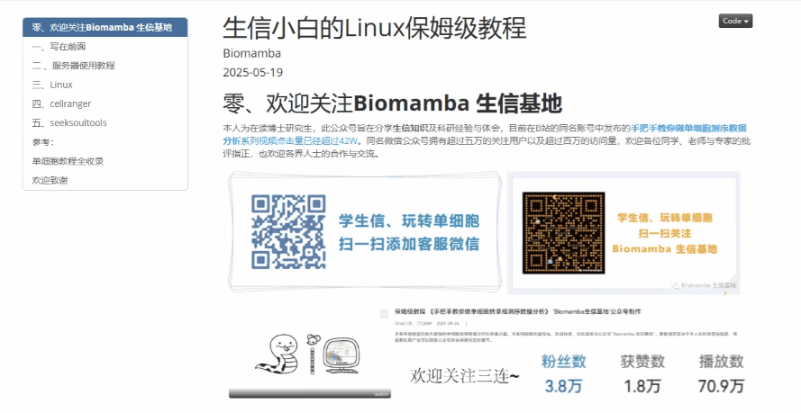

Python基础课学习手册
同我们以前的课程一样，我们给大家准备了学习手册和学习资料，大家可联系客服微信[Biomamba_zhushou]领取：
空间转录组-概论及上游定量学习资料
同我们以前的课程一样，我们给大家准备了学习手册和学习资料，大家可联系客服微信[Biomamba_zhushou]领取：
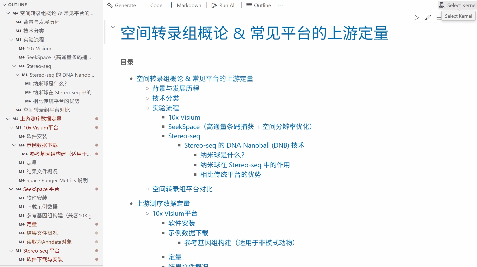
教程目录 ：
零、欢迎关注
一、空间转录组概论 &常见平台的上游定量
1.1 背景与发展历程
1.2 技术分类
1.3 实验流程
1.3.1 10x Visium
1.3.2 SeekSpace（高通量条码捕获+空间分辨率优化）
1.3.3 Stereo-seq
（1）Stereo-seq的DNA Nanoball（DNB）技术
1.4 空间转录组平台对比
二、上游测序数据定量
2.110x Visium平台****
2.1.1 软件安装
2.1.2 示例数据下载
2.1.3 参考基因组构建（适用于非模式动物）
2.1.4 定量
2.1.5 结果文件概况
2.1.6 Space Ranger Metrics说明
2.2SeekSpace平台****
2.2.1 软件安装 2.2.2 下载示例数据 2.2.3 参考基因组构建（兼容10X genomics格式） 2.2.4 定量 2.2.5 结果文件概况 2.2.6 读取为Anndata对象
2.3 Stereo-seq平台
2.3.1 软件安装与下载 2.3.2 构建参考基因组（非模式动物） 2.3.3 定量 （1）输入文件 （2）运行 2.3.4 结果文件概况 （1）不同大小Bin统计信息 （2）Cell Bin统计信息 2.3.5 读取为Anndata对象 **** 三、空转教程全收录五、欢迎致谢****
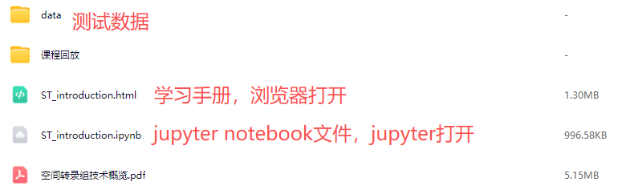
测试文件，总大小169.39GB
空间转录组-基础分析学习资料
同我们以前的课程一样，我们给大家准备了学习手册和学习资料，大家可联系客服微信[Biomamba_zhushou]领取：
教程图片集锦：

教程目录：
一、写在前面
二、基本分析
2.1 加载所需库与软件2.2 构建基础对象2.3 数据质控（1）标记线粒体基因 (mt)（2）标记核糖体基因 (ribo)2.4 归一化（1）移位对数法（lognormalize）（2）pearson残差法（3）Pearson 残差标准化对比 log1p 标准化2.5 特征选择（选择高变基因）（1）基于基因离散度（2）基于归一化方差（3）基于pearson近似残差（4）HVG 选择方法的重叠与差异分析（5）基于空间变异度选择高度可变的基因2.6 降维（1）PCA（2）t-SNE（3）UMAP（4）导入已有坐标信息2.7 空间基因表达和聚类可视化（1）基因表达叠加组织切片（2）基因表达叠加UMAP可视化2.8 spot的基础注释（1）寻找差异marker基因（2）差异基因气泡图（3）使用字典定义细胞类型（4）差异基因热图（5）使用字典绘制marker表达气泡图（6）差异基因平均表达热图（7）差异基因表达小提琴图（8）组织映射细胞类型（9）绘制细胞类型UMAP图（美化）（10）绘制细胞类型marker基因组织切片表达
三、环境信息
四、空间转录组教程全收录
五、欢迎致谢
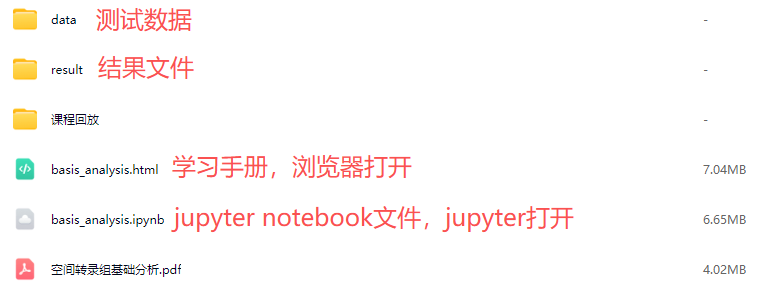
测试文件，总大小19.97GB
空间转录组-进阶分析-多样本分析学习资料
同我们以前的课程一样，我们给大家准备了学习手册和学习资料，大家可联系客服微信[Biomamba_zhushou]领取：
教程图片集锦：
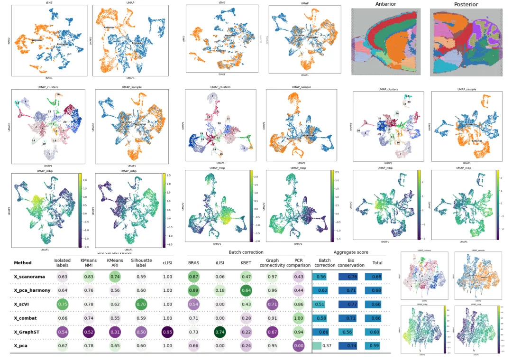
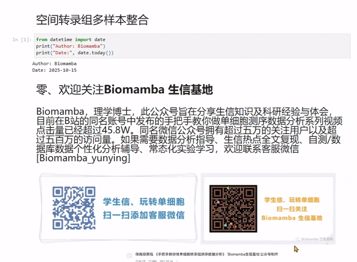
教程目录：
一、写在前面
二、空间多样本整合：应对批次效应的挑战
三、代码实操
3.1 导入数据
3.2 过滤初始数据 （参考基础分析部分）
3.3 基础处理，均一化(normalize)
3.4 聚类
3.5 不同的去批次方法
（1）harmony去批次
（2）Scanorama
（3）Combat矫正
（4）BBKNN矫正
（5）深度学习模型
（6）比较不同去批次方法
四、总结
4.1 空间转录组教程全收录
4.2 详细排名、特征、可用性和可扩展性
（1）性能排名 (Ranking)
（2）方法特性 (Features)
（3）可用性 (Usability) 与 可扩展性 (Scalability)
4.3 综合表现突出的方法
4.4 ATAC数据整合
（1）性能热图
（2）整体表现 (Overall Score)
（3）批次校正 (Batch correction)
（4）生物学信息保留 (Bio conservation)
（5）特征空间与输出排名
（6）性能散点图
五、环境信息
六、空间转录组教程全收录
七、欢迎致谢
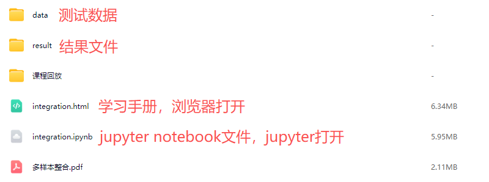
测试文件，总大小2.03GB
空间转录组-进阶分析-共表达网络分析学习资料
同我们以前的课程一样，我们给大家准备了学习手册和学习资料，大家可联系客服微信[Biomamba_zhushou]领取：
教程图片集锦：
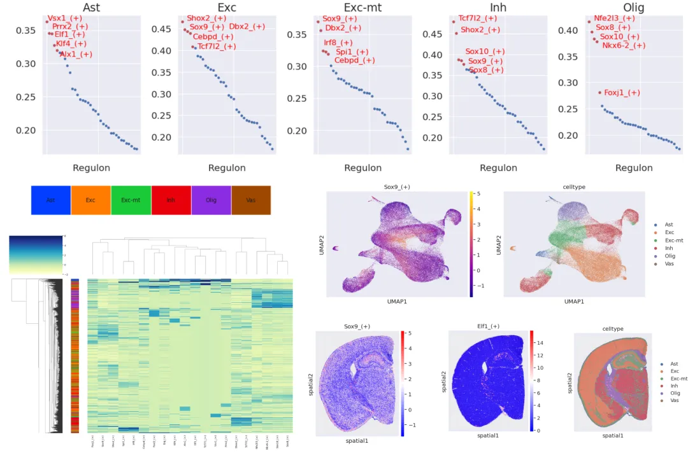
本章节分了三个手册，分别是针对三种空转数据，即scenic学习手册、decoupler学习手册、hotspot学习手册。
scenic学习手册以html文件格式提供，可在浏览器中打开并翻阅学习：
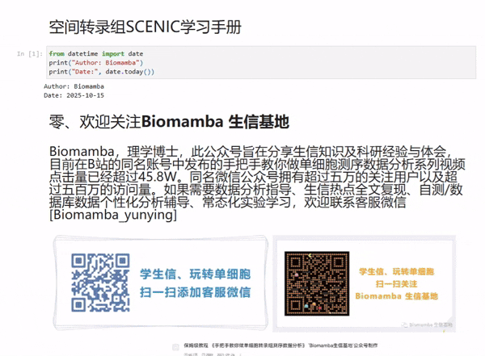
教程目录 ：
一、写在前面
二、SCENIC：转录因子调控网络推断工具
2.1 简介与在空间转录组中的应用
2.2 SCENIC 的三步核心工作流程
2.3 SCENIC 的最终输出与应用价值
2.4 SCENIC 流程三个版本对比与 SCENIC+ 优势总结
（1）三个版本概述
（2）SCENIC+ 相较于前两者的核心优势
三、代码实操
3.1 基因调控网络推断，生成共表达模块
3.2 Cistarget 预测
3.3 转录因子富集
3.4 可视化AUC矩阵
（1）数据输入
（2）提取相关数据整合
（3）差异rugulons
（4）结合空间样本的TF活性可视化
3.5 结合空间样本的TF活性可视化
3.6 TF活性热图
四、环境信息
五、空间转录组教程全收录
六、欢迎致谢

测试文件，总大小683.57MB
decoupler学习手册以html文件格式提供，可在浏览器中打开并翻阅学习：
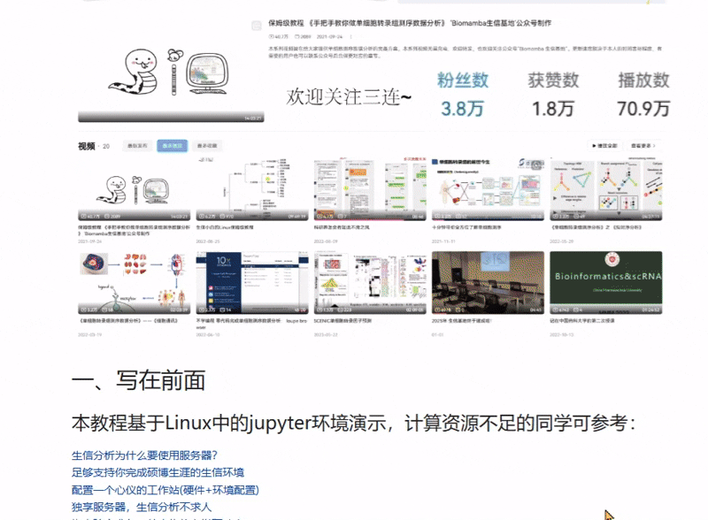
教程目录 ：
一、写在前面
二、decoupler包介绍
2.1 简介与核心目标
2.2 核心原理与推断方法
（1）ULM
（2）MLM
（3）AUCell
（4）GSEA
2.3 数据集成与应用场景
（1）知识库整合
（2）主要应用场景
2.4 与 Scanpy 的集成
三、转录因子活性分析
3.1 加载所需数据与包
3.2 选择分析方法
3.3 差异TF活性分析
四、通路富集分析
4.1 PROGENy Pathway Genes
4.2 通路得分
4.3 可视化
4.4 Hallmark 基因
五、环境信息
六、空间转录组教程全收录
七、欢迎致谢
测试文件，总大小 1.66GB
** **
hotspot学习手册 以html文件格式提供，可在浏览器中打开并翻阅学习：
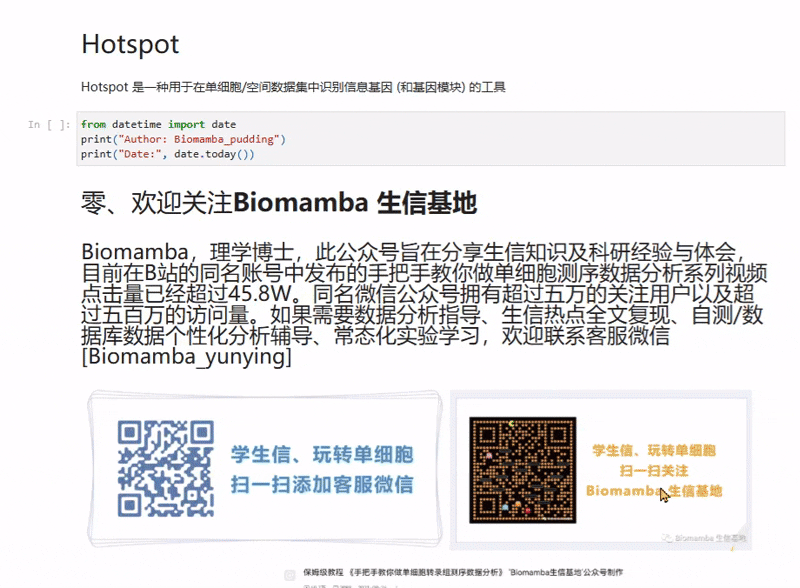
教程目录 ：
一、写在前面
二、HotSpot介绍
三、代码实操
3.1 加载所需库
3.2 加载示例数据
3.3 创建hotspot对象
3.4 确定具有空间变异的基因
3.5 将基因分组成空间模块
3.6 绘制模块相关性图
3.7 总结模块评分
四、环境信息
五、空间转录组教程全收录
六、欢迎致谢

测试文件，总大小 13.47MB
空间转录组-进阶分析-去卷积分析学习资料
同我们以前的课程一样，我们给大家准备了学习手册和学习资料，大家可联系客服微信[Biomamba_zhushou]领取：
教程图片集锦：
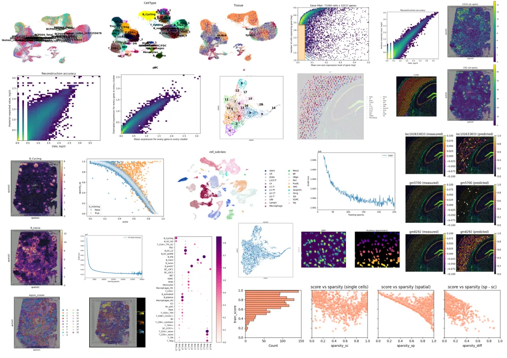
本章节分了两个手册，分别tangram学习手册和cell2location学习手册。tangram核心目的是解决低分辨率空间技术（如Visium）中Spot信号混合的问题；cell2location解决空间转录组数据中Spot信号混合的问题。tangram学习手册以html文件格式提供，可在浏览器中打开并翻阅学习：
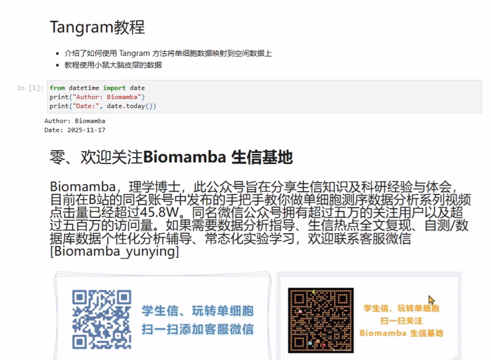
教程目录 ：
写在前面
一、Tangram介绍
1.1 Tangram：基于最优传输理论的空间反卷积方法
1.2 核心原理
1.3 工作流程
二、代码实操 Ⅰ：Slide-seq
2.1 软件和数据准备
（1）GPU准备
（2）下载数据
2.2 加载空间数据
2.3 加载单细胞数据
2.4 准备映射
2.5映射
2.6下游分析
三、代码实操Ⅱ：10x Visium
3.1 软件和数据准备
3.2 加载空间转录组和单细胞参考数据
3.3 预处理
3.4 数据对齐
3.5 映射结果检查
3.6 通过对齐单细胞数据获得新的空间数据
3.7 精确反卷积
3.8 通过比对单细胞数据进行反卷积
四、环境信息
五、空间转录组教程全收录
六、欢迎致谢
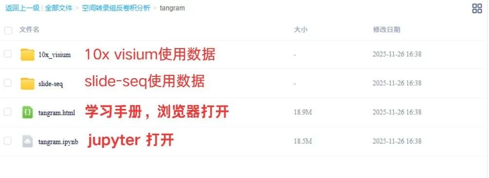
测试文件，总大小 8.35GB
cell2location学习手册以html文件格式提供，可在浏览器中打开并翻阅学习：
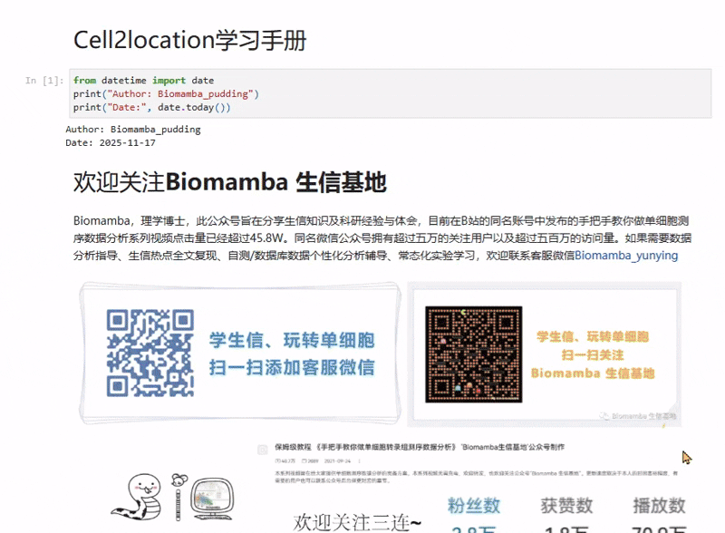
教程目录 ：
一、写在前面
二、Cell2location：空间转录组数据细胞类型解卷积工具
2.1 Cell2location简介与核心目标
2.2 Cell2location的工作流程与技术原理
2.3Cell2location的主要优势****
2.4 结果可视化
三、代码实操
3.1 加载安装的库
3.2 加载单细胞转录组参考数据
3.3 数据质控
3.4 获取参考数据集
3.5 参考数据集质控
3.6 参考细胞类型特征估计（Estimation of reference cell type signatures）------NB回归
3.7 模型训练（GPU可加速）
3.8 检查QC质量图表
3.9 加载训练好的 scRNA-seq 参考数据和回归模型
3.10 进行空间映射
3.11 可视化细胞类型丰度
3.12 下游分析
（1）通过聚类来区分不同组织区域
（2）非负矩阵分解 (NMF) 识别细胞区室 / 组织区域
（3）估计空间数据中每个基因的细胞类型特异性表达
四、环境信息
五、空间转录组教程全收录
六、欢迎致谢
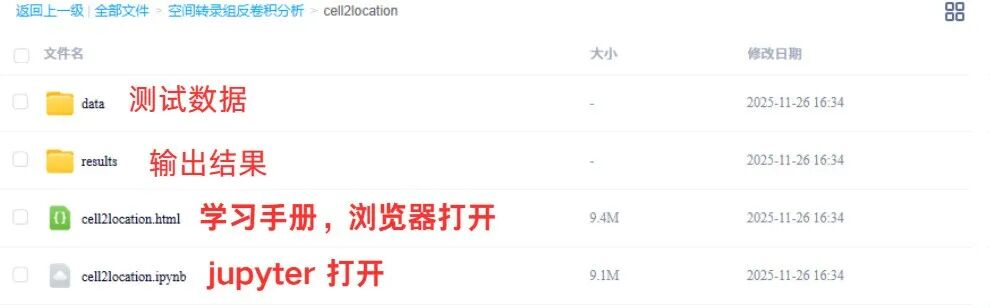
测试文件，总大小 6.76GB
空间转录组-进阶分析-邻域分析学习资料
同我们以前的课程一样，我们给大家准备了学习手册和学习资料，大家可联系客服微信[Biomamba_zhushou]领取：
教程图片集锦：
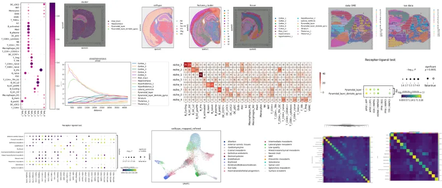
本章节分了三个手册，分别是针对三种方法解决空转数据邻域分析，即Squidpy学习手册、stSME聚类方法学习手册、NMF分解学习手册 。
Squidpy学习手册以html文件格式提供，可在浏览器中打开并翻阅学习：
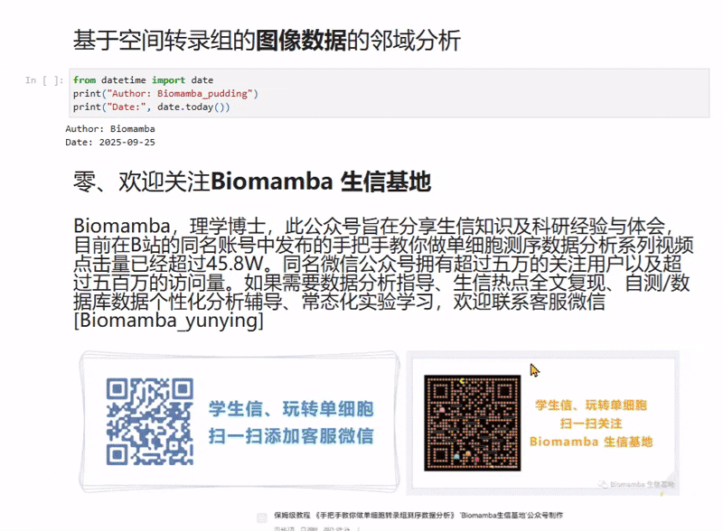
教程目录 ：
一、写在前面
二、 邻域分析
2.1 空间转录组图像特征提取：结合形态与分子信息
2.2 图像特征的价值：互补与融合
2.3 应用
三、代码实操
3.1 加载所需库
3.2 读取数据
3.3 计算不同尺度的特征
3.4 数据聚合
3.5 数据基础分析
3.6 可视化聚类信息
3.7 邻域富集
（1）空间邻域富集分析：识别组织中 Spot 簇的共现模式
（2）分析步骤
（3）配体 - 受体相互作用分析
四、环境信息
五、空间转录组教程全收录
六、欢迎致谢
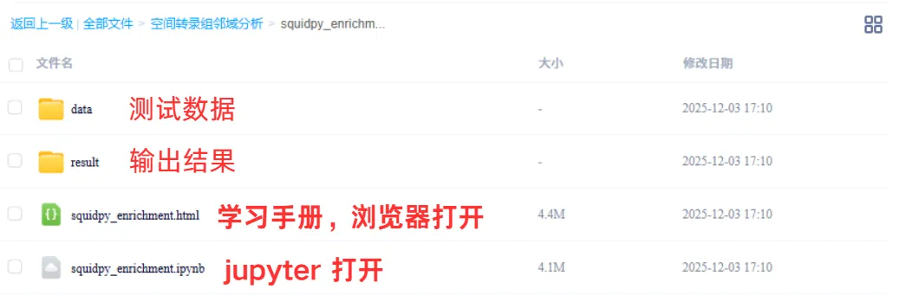
测试文件，总大小 355.71MB
stSME聚类方法学习手册以html文件格式提供，可在浏览器中打开并翻阅学习：
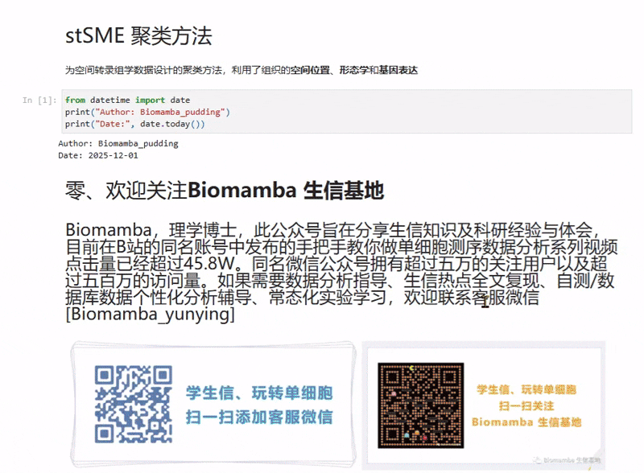
教程目录 ：
一、写在前面
二、SME 算法
2.1 背景
2.2 方法原理（SME = Spatial Morphology Expression）
（1）提取形态学特征
（2）计算形态学相似性
（3）基因表达调整（Morphological normalization）
（4）形态调整后的基因表达矩阵 (Morph)
2.3 特点与优势
三、代码实操
3.1 例1：小鼠大脑（冠状面）
（1）数据预处理
（2）运行stSME聚类
3.2 例2：小鼠大脑 (后矢状面)
（1）数据预处理
（2）运行stSME聚类
四、环境信息
五、空间转录组教程全收录
六、欢迎致谢
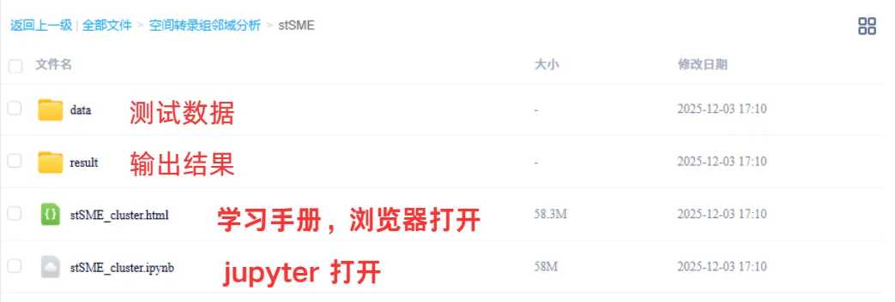
测试文件，总大小 909.84MB
NMF分解学习手册 以html文件格式提供，可在浏览器中打开并翻阅学习：
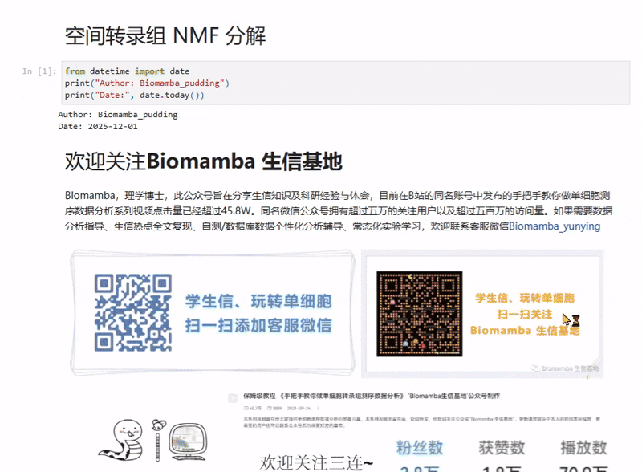
教程目录 ：
一、写在前面
二、非负矩阵分解 (NMF) 识别细胞区室 / 组织区域
三、代码实操
3.1 导入数据和库
3.2 使用Cell2location进行空间共定位
3.3 输出共定位结果
3.4 可视化共定位热图
四、环境信息
五、空间转录组教程全收录
六、欢迎致谢
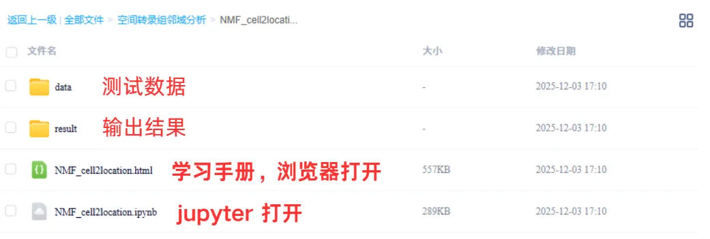
******测试文件，总大小 8.54MB ******
空间转录组-进阶分析-细胞通讯分析学习资料
同我们以前的课程一样，我们给大家准备了学习手册和学习资料，大家可联系客服微信[Biomamba_zhushou]领取：
教程图片集锦：
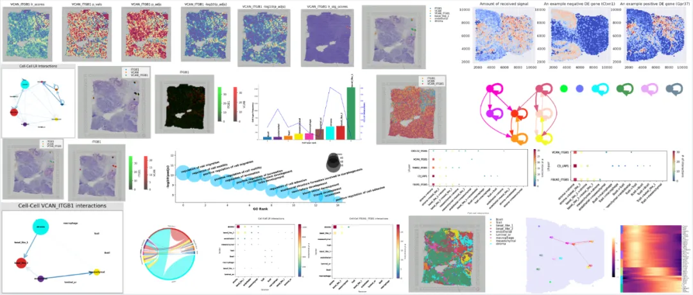
本章节分了三个手册，即CellphoneDB学习手册、COMMOT学习手册、stLearn学习手册 。CellPhoneDB、Commot、stLearn的概论及在空转细胞通讯中的分析实操。
CellphoneDB学习手册以html文件格式提供，可在浏览器中打开并翻阅学习：
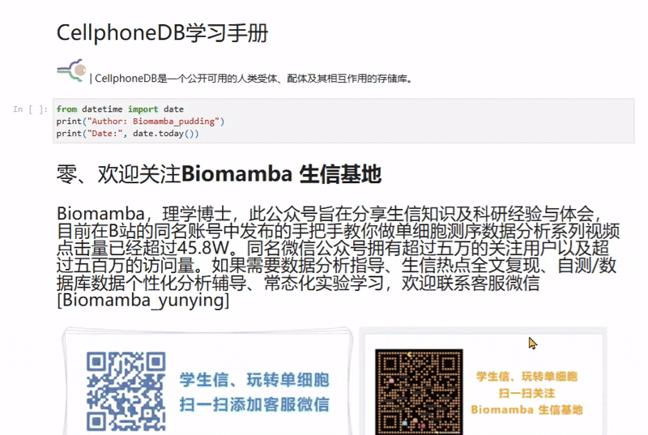
教程目录 ：
一、写在前面
二、CellPhoneDB 与空间转录组通讯分析
2.1 CellPhoneDB简介
（1）核心功能
（2）传统分析局限
2.2 CellPhoneDB 在空间转录组中的应用
（1）解决的关键问题
（2）分析流程的调整与集成
三、代码实操
3.1 检查版本信息
3.2 输入文件
3.3 检查输入文件
3.4 运行统计分析
3.5 输出文件信息
3.6 解释CellphoneDB 结果
3.7 基础结果可视化
（1）按递归排序
3.8 对候选交互通路进行可视化
四、参考
五、环境信息
六、空间转录组教程全收录
七、欢迎致谢
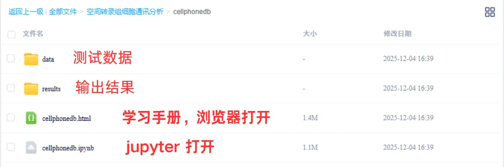
测试文件，总大小 212.60MB
COMMOT学习手册以html文件格式提供，可在浏览器中打开并翻阅学习：
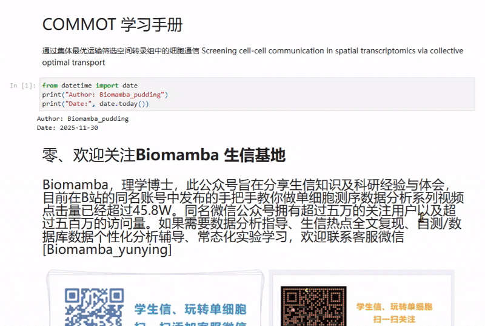
教程目录 ：
一、写在前面
二、 Commot介绍
2.1 简介
2.2 核心原理
（1）构建空间邻域图
（2）空间加权表达
（3）L-R 相互作用推断
（4）统计显著性
2.3 Commot 的关键优势
2.4 总结
三、代码实操
3.1 软件安装
3.2 导入所需库和包
3.3 预处理空间数据文件
3.4 空间通讯信号推断
3.5 计算差异信号通路
四、环境信息
五、空间转录组教程全收录
六、欢迎致谢
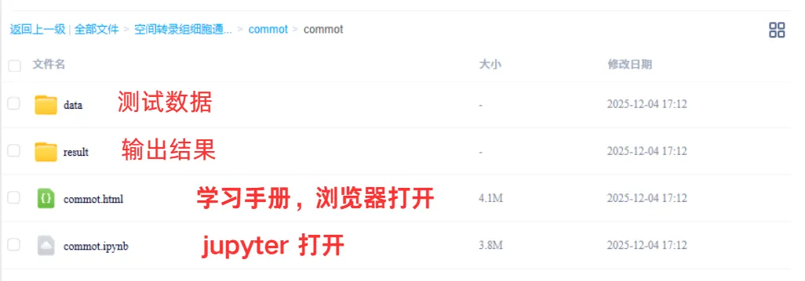
******测试文件，总大小 69.46MB ******
stLearn学习手册 以html文件格式提供，可在浏览器中打开并翻阅学习：
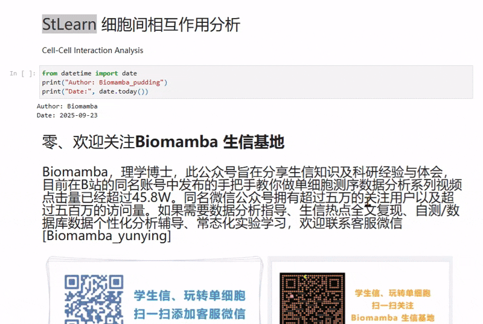
教程目录 ：
一、写在前面
二、stLearn 介绍
2.1 空间转录组学习平台
2.2 StLearn 细胞-细胞相互作用 CCI 分析管道
（1）加载配体-受体 LR 基因对
（2）确定显著相互作用的位点
（3）计算有效点的邻居和连接
（4）确定显著相互作用
（5）可视化CCI 结果
三、代码实操
3.1 加载所需库
3.2 数据加载和预处理
3.3 运行受配体分析
3.4 P值矫正
3.5 按显著程度可视化LR的整体排名
3.6 判定绘图质量：LR 热点与表达水平和频率的相关性评估
3.7 下游可视化
（1）受配体对的统计可视化
（2）LR 解释结果可视化
（3）预测重要的 CCIs
（4）检查相互作用和细胞类型频率相关性
（5） CCI 可视化
3.8 作者建议：CCI 可视化技巧与策略
（1）核心可视化组合推荐
（2）突出显示关键生物学区域
四、环境信息
五、空间转录组教程全收录
六、欢迎致谢
测试文件，总大小 841.40GB
空间转录组-进阶分析-轨迹分析学习资料
同我们以前的课程一样，我们给大家准备了学习手册和学习资料，大家可联系客服微信[Biomamba_zhushou]领取：
教程图片集锦：
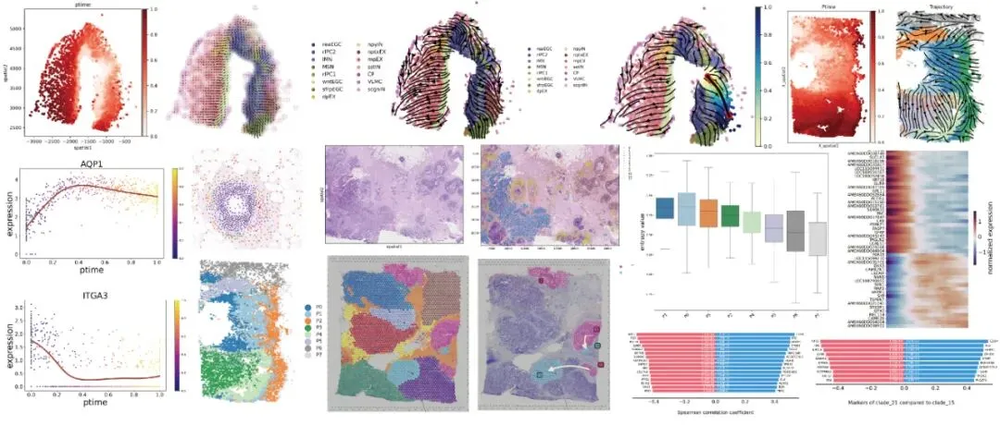
本章节分了两个手册，即SpaTrack学习手册和stLearn学习手册。SpaTrack的核心功能是进行空间轨迹推断(Spatial Trajectory Inference)，以重建细胞状态在组织中的演变路径。而stLearn 旨在将传统的拟时序分析扩展到空间转录组数据，引入了伪时空 (PST) 算法来重建细胞状态在组织中的演变轨迹。
SpaTrack学习手册以html文件格式提供，可在浏览器中打开并翻阅学习：
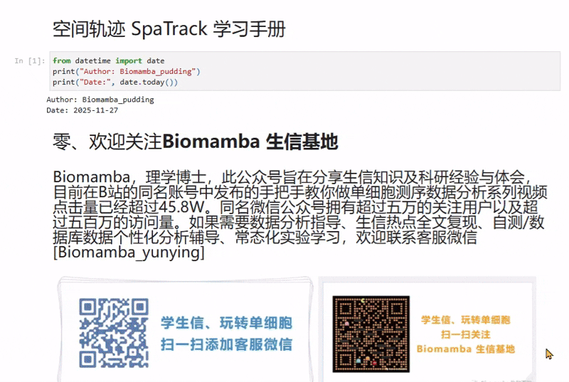
教程目录 ：
一、写在前面
二、SpaTrack 空间分析
2.1 核心原理：最优传输 (Optimal Transport, OT)
2.2 主要功能与优势
2.3 应用场景
三、代码实操
3.1 受伤后美西螈大脑再生的空间数据
（1）读取和预处理数据
（2）选择起始点
（3）自动确定起始簇
（4）手动选择spot(细胞)
（5）计算细胞转移概率
（6）计算细胞拟时序
（7）可视化结果
（8）下游分析
（9）最小行动路径 (LAP) 段
（10）LAP 上的拟时序依赖性基因
3.2 肝内胆管癌的空间数据
（1）导入所需数据和库
（2）数据预处理
（3）选择分化起点
（4）计算细胞转移概率
（5）计算细胞的拟时序
（6）计算整体的分化方向
（7）可视化结果
（8）下游分析
（9）LAP 上的拟时序依赖基因
四、环境信息
五、空间转录组教程全收录
六、欢迎致谢
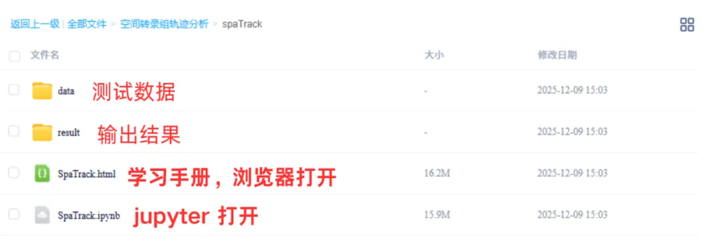
测试文件，总大小 2.48GB
stLearn学习手册以html文件格式提供，可在浏览器中打开并翻阅学习：
教程目录 ：
一、写在前面
二、stLearn 拟时序内容介绍（Spatial Trajectory Inference）
2.1 核心概念：伪时空（Pseudo-Space-Time, PST）
（1）整合多维度信息
（2）轨迹重建算法
（3）轨迹类型与应用
三、代码实操
3.1 基于10x visium测序技术
（1）读取和预处理数据
（2）聚类
（3）空间轨迹推理 (Spatial Trajectory Inference)
（4）空间轨迹推断——全体水平
（5）检测过渡标志基因
3.2 基于 Xenium Data
（1）加载库和测试数据
（2）读取 Xenium Data
（3）数据预处理
（4）聚类
（5）PSeudo-Time-Space (PSTS) 空间轨迹推断
四、环境信息
五、空间转录组教程全收录
六、欢迎致谢
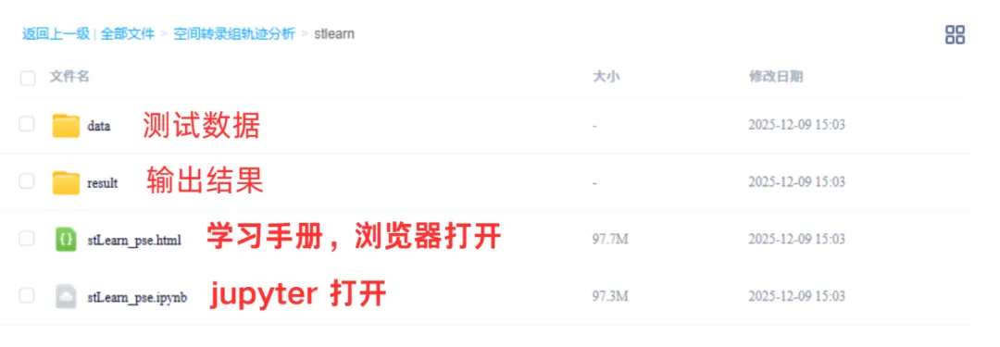
测试文件，总大小 14.37GB
空间转录组-进阶分析-拷贝数变异分析学习资料
同我们以前的课程一样，我们给大家准备了学习手册和学习资料，大家可联系客服微信[Biomamba_zhushou]领取：
教程图片集锦：
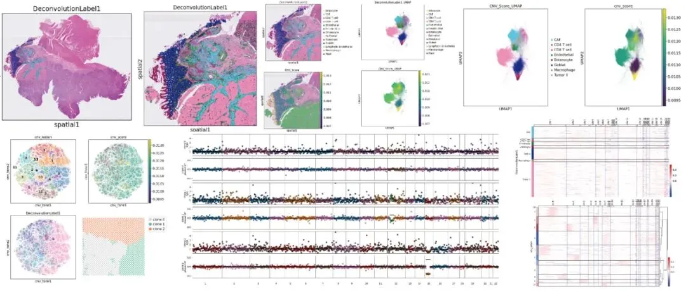
本章节分了两个手册，即InferCNV学习手册和CalicoST学习手册。InferCNV用于从单细胞转录组学数据中推断拷贝数变异(CNV) 事件；CalicoST的核心目标是同时推断肿瘤的等位基因特异性拷贝数异常(CNA)，并重建肿瘤的遗传进化和空间传播模式（即系统发育地理）。
InferCNV
InferCNV学习手册以html文件格式提供，可在浏览器中打开并翻阅学习：
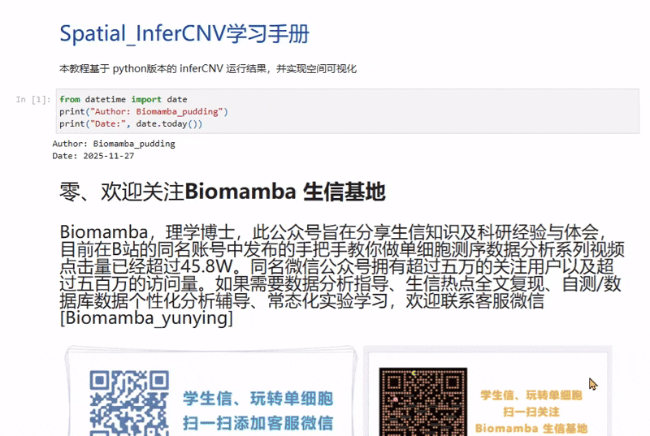
教程目录 ：
一、写在前面
二、 空间 CNV（spatial CNV）
2.1 什么是 CNV？为什么肿瘤里这么重要？
2.2 传统 CNV 分析的三大盲区
2.3 空间 CNV（spatial CNV）到底是什么？
2.4 空间 CNV 能回答哪些过去 10 年答不了的问题？
2.5 总结
三、InferCNV
3.1 导入所需库
3.2 读取测试文件
3.3 上游预处理
3.4 基因注释
3.5 CNV分析
3.6 CNV可视化
3.7 基于CNV信息的聚类结果
四、环境信息
五、空间转录组教程全收录
六、欢迎致谢
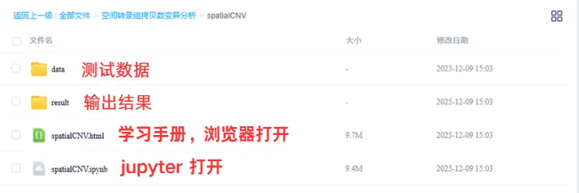
测试文件，总大小 22.59GB
CalicoST
CalicoST学习手册以html文件格式提供，可在浏览器中打开并翻阅学习：
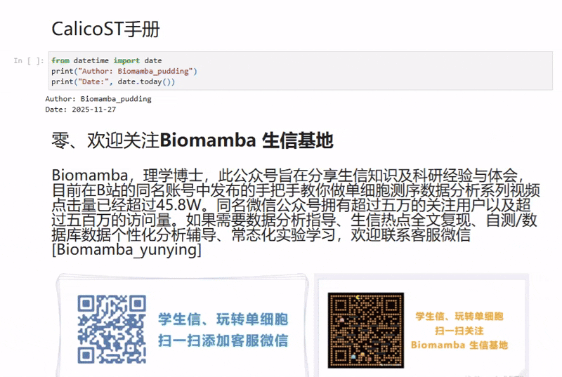
教程目录 ：
一、写在前面
二、CalicoST 软件介绍
2.1 核心功能与分析目标
2.2 关键优势
2.3 肿瘤等位基因频率变异
三、代码实操
3.1 下载数据
3.2 预输入文件准备
（1）准备SNP信息文件
（2）准备configuration文件
（3）运行 CalicoST
（4）python可视化
四、环境信息
五、空间转录组教程全收录
六、欢迎致谢
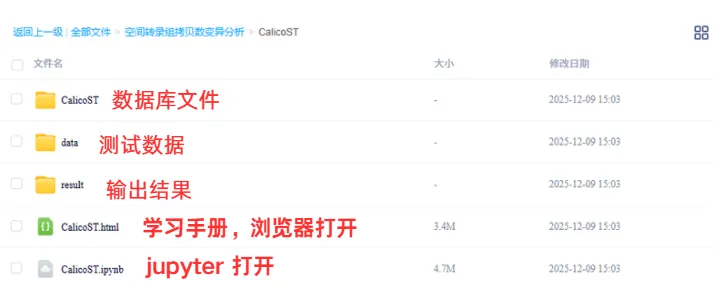
测试文件，总大小 519.62MB
空间转录组-综合分析-文献复现学习资料


同我们以前的课程一样，我们给大家准备了学习手册和学习资料，大家可联系客服微信[Biomamba_zhushou]领取：
教程图片集锦：
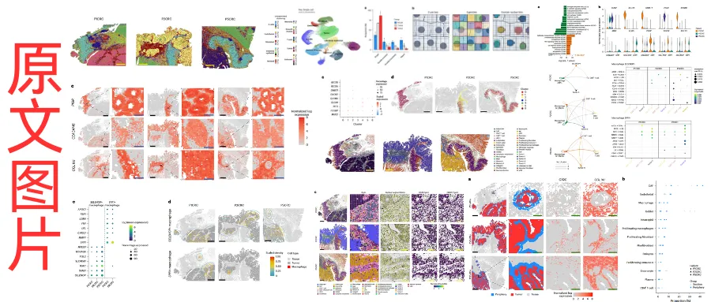
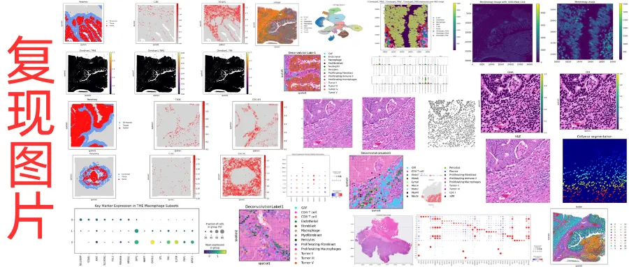
学习手册以html文件格式提供，可在浏览器中打开并翻阅学习：
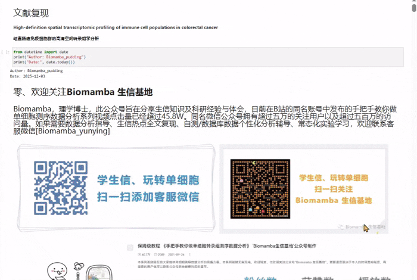
教程目录 ：
一、写在前面
二、 文献解读
2.1 背景
2.2 方法
（1）数据与技术
（2）分析流程
2.3 主要发现
（1）Visium HD 的高精度性能
（2）Visium HD 在单细胞水平上绘制CRC的全景图
（3）肿瘤边界分析揭示的巨噬细胞亚群
（4） CRC TME 中的 T 细胞克隆扩增生态位
三、代码复现
3.1 Fig1：使用Visium HD对CRC和NAT样本进行分析
（1）下载所需数据
（2）读取 单细胞转录组参考数据
（3）读取10x Visium HD 空间转录组数据
3.2 Fig3：使用Visium HD对 CRC样本进行空间定位显示出高分辨率、准确的转录本定位
（1）空间转录组细胞类型鉴定( tangram去卷积)
（2）可视化细胞类型
（3）基因表达可视化
3.3 Fig4：每个CRC区段中肿瘤周边的细胞组成
（1）可视化 肿瘤与周边细胞
（2）计算不同 细胞的比例
（3）基因表达气泡图绘制 (Macrophages异质性)
（4）绘制巨噬细胞核密度图
3.4 Fig5：TME中两种巨噬细胞亚群的鉴定与定位
（1）富集差异比较
（2）亚型特异基因表达小提琴图
（3）亚型表达气泡图
（4）亚型空间可视化分布
（5）细胞通讯
3.5 Fig6：T细胞在TME中的空间定位
3.6 Fig7：Xenium In Situ证实了巨噬细胞亚型和克隆性扩增的T细胞在TME中的存在和定位
（1）Xenium数据的读取
（2）基因表达的绘制
（3）子图区域的选取
（4）Xenium转录本表达绘制
四、环境信息
五、空间转录组教程全收录
六、欢迎致谢
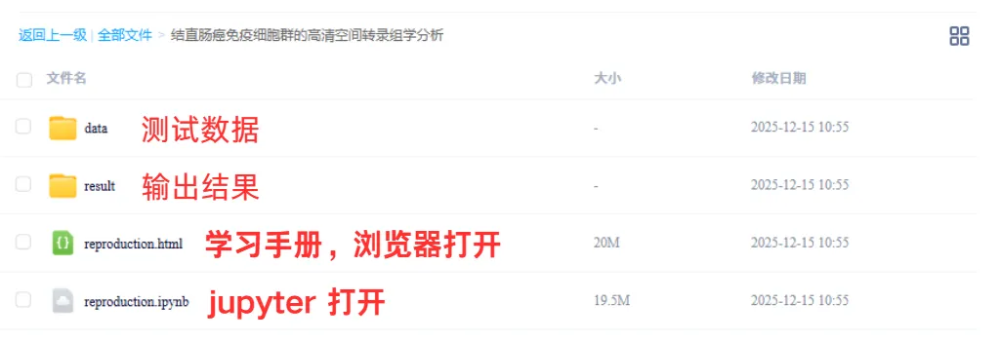
测试文件，总大小 82.52GB
**
**

如何联系我们

 留一个领取资料、开箱即用的单细胞分析镜像的微信号[Biomamba_zhushou]，方便各位随时交流。同时我们也构建了交流群矩阵，欢迎大家入群讨论。
大家可以阅读完这几篇之后添加给生信入门初学者的小贴士
没有检索，就没有发言权
留一个领取资料、开箱即用的单细胞分析镜像的微信号[Biomamba_zhushou]，方便各位随时交流。同时我们也构建了交流群矩阵，欢迎大家入群讨论。
大家可以阅读完这几篇之后添加给生信入门初学者的小贴士
没有检索，就没有发言权
已有生信基地联系方式的同学无需重复添加
 您点的每个赞和在看，我都认真当成了喜欢
您点的每个赞和在看，我都认真当成了喜欢